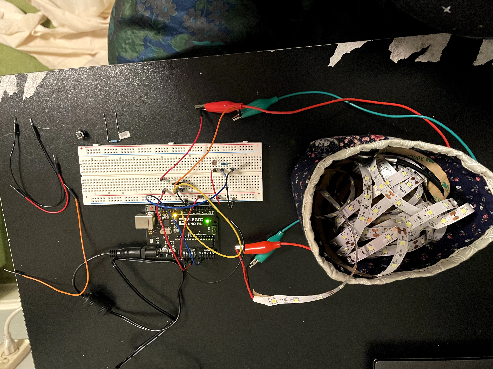
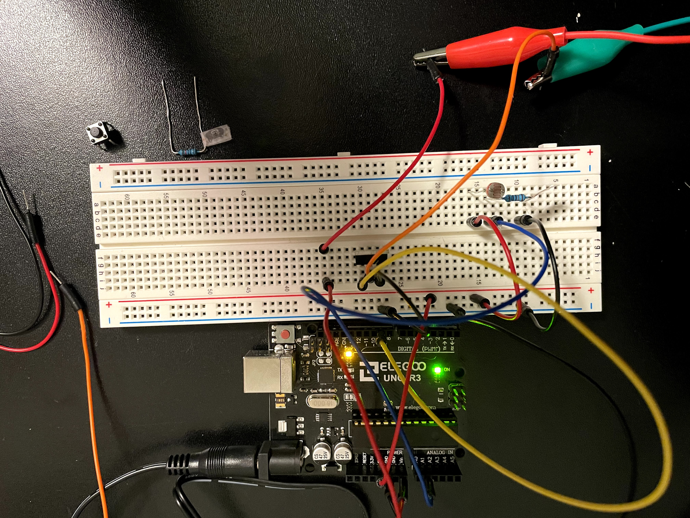

Assignment 5: High(er) voltage and Transistors!
Kenny really helped me out problem shooting my wiring. I had put flipped the photoresistor and the 100K resistor, so I was getting unexpected lighting. I also used the arduino example code Smoothing to help reduce the flickering of the lights.
The Gif

As the photoresistor is covered, the LED strip lights up. This is a fun project that I might extend to my final project, where I set up the lights in my work space, so that when the room gets dark, the lights compensate. I would probably add a button or infared option to turn it on and off, so that when I leave the room the lights aren't always on.
The Schematic
 I connect up the LED strip to Vin, which will be 11.36 volt, then to the transistor, which is connected to pin 9 and ground. The photoresistor is connected to 5v, with a 100k ohm resistor, and A1 between them to read the voltage difference.
I connect up the LED strip to Vin, which will be 11.36 volt, then to the transistor, which is connected to pin 9 and ground. The photoresistor is connected to 5v, with a 100k ohm resistor, and A1 between them to read the voltage difference.
The Math
Let's start with the photoresistor, and what resistor to use as V2. When I looked up the range for the photoresistor, I found that darkness creates a resistance of 200k ohms, and bright light creates a resistance of 10k ohms. I want a wide range of sensing, since my project is about sensing whether it's daytime or night time. So I want the difference between the two extreems to be as lorge as possible, like:
change = V1/(V1 + 10) - V1/(V1 + 200)
if I set V1 to 200 or 10, thats an okay range:
change = 200/(200+ 10) = 200/(200+200)
change = 20/21 - 1/2 = 9.5/21
change = 10/(10+ 10) = 10/(10+200)
change = 1/2 - 1/21 = 9.5/21
if I set V1 to a number between, that gets the largest range:
change = 100/(100+ 10) = 100/(100+200)
change = 10/11 - 1/3 = 19/33
Now let's talk about the LED strip and voltage. I measured Vin, and while it should be 12v, I found mine to be 11.4v. The LED strip is a 100 prong parallel circut. Within each prong is 3 white LEDs and 1 180 ohm resistor. Each white LED has a voltage drop of 11.36. The current in 1 prong is:
V = IR
11.4 - 3(3.3) = I * 180
1.5 = I * 180
I = 0.00833 amperes
I = 8.33 mA
Within a parallel circut, summation is the cumulation of each prong. with 100 prongs:
0.0083 * 100 = .833 amperes
So the total curent I am using is .833 amperes. Since the transistor has a maximum drain current of 32 amperes, I'm well within the range.
The Wiring
 
Here's the breadboard! Red wires connect to power and black connects to ground. The blue wire is the photoresistor input. The yellow wire connects to the transistor gate. The orange wire connects ti the ground side of the LED strip.
The Code
// Using a photoresistor to check lighting, an LED strip, using a transistor,
// is off when it's bright out, and on when it gets dark, and fading in dim light
const int sensor = A1; // pin that reads photoresistor
const int gate = 9; // pin that's the gate to the transistor
const int numReadings = 20; // how many readings are averaged at a time
const int bright = 700; // any brighter than this and the LEDs are off
const int dark = 200; // any darker than this and the LEDS are fully on
int sensorValue = 0; // raw photoresistor data
int output; // calculated LED brightness based on one photoresistor reading
int readings[numReadings]; // holds all the readings to be averaged
int readIndex = 0; // current index of readings
int total = 0; // total of all the readings to be averaged
int average = 0; // average of the readings
void setup() {
Serial.begin(9600);
pinMode(gate, INPUT); // sets up gate pin to be an input
for (int thisReading = 0; thisReading < numReadings; thisReading++) { //for numreadings
readings[thisReading] = 0; //set that index in readings[] to be 0
}
}
void loop() {
sensorValue = analogRead(sensor); // read the photoresistor
output = map(sensorValue, dark, bright, 0, 255); // map into the analogWrite() range where dark is 0 and bright is 255
output = constrain(output, 0, 255); // constrain the values to the analogWrite() range
output = 255 - output; // reverse the values, so that dark ends up 255 and bright ends up 0
// This chunk of code is from the example Smoothing by David A. Mellis
// http://www.arduino.cc/en/Tutorial/Smoothing
total = total - readings[readIndex]; // remove the oldest reading from the total
readings[readIndex] = output; // replace the oldest reading with the new reading
total = total + readings[readIndex]; // add the newest reading to the total
readIndex = readIndex + 1; // move indext to the next oldest reading
if (readIndex >= numReadings) { // if you're at the end of the list,
readIndex = 0; // go back to the beginning
}
average = total / numReadings; // find the average reading
analogWrite(gate, average); // brighten the LEDs accordingly
Serial.println(average)
delay(1); // delay in between reads for stability
}